<mat-toolbar>
    <div class="logo-container">
        
      </div>
    <span class="spacer"></span>
    <button id="home-button" mat-button routerLink="home" routerLinkActive="active-link">Save Editor</button>
    <button id="home-button" mat-button routerLink="home" routerLinkActive="active-link">Faq</button>
    <button id="home-button" mat-button routerLink="home" routerLinkActive="active-link">Github</button>
    <button id="home-button" mat-button routerLink="home" routerLinkActive="active-link">Donate</button>
</mat-toolbar>
